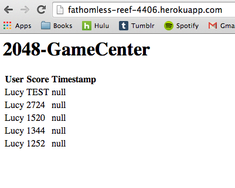

Methodology
I began assessing the security of this web application using black box testing. I started by trying various types of attacks without looking at the code. After some successes and some failures, I viewed the javascript file for the web application and was able to pinpoint an additional vulnerabily and have an understanding as to why previous attacks failed. When conducting tests, I the tools I used include curl and the Firefox add-on, Tamper Data.Abstract of Findings
Inputs are not checked when submitted. This web application relies on users properly putting in the correct input in the correct format. This exposes many vulnerabilities because the user can manipulate the inputs and inject malicious code. Attackers can inject scripts, html tags, and files that tamper with the web application and potentially crash it. Since the highest vulnerabilities come from improper checks on inputs, the web application can be made more secure by preventing against such inputs. Other security measures such as only allowing post requests from specific URI's can be added to better secure the the application.Issues Found
Cross Site Scripting
- Vulnerability found in submit.json API
- Risk: high
- This web application is vulnerable malicious inputs or scripts. The web application currently accepts scripts, which opens up the potential for an attacker to inject malicious code or use javascript to page contents. The site can potentially be redirected to a similar looking page with false results. This opens up the potential for false database insertions and the potential for attackers to manipulate the page's contents.
- To find this vulnerability, I was able to inject a script tag in the username that displayed an alert, as shown in the screenshot below
- This vulnerability can be resolved by filtering inputs and escaping characters that could be dangerous. These include < > \ $ ! / ' " & among others. This could also be prevented against by searching for these characters and replacing them with other characters that are not malicious, such as "a" "b" or "c".
Server Crash
- Vulnerability found in the submit.json API
- Risk: high
- There is a high potential that users can crash the database. This is extremely dangerous since it can disable the functionings of the web application.
- As shown by the screenshot below, the web application currently accepts files. This allows attackers to send exceptionally large files that can quickly fill up the database and crash the application.
- This can be prevented by creating an array containing various types of extensions such as ".jpg," ".png," ".mov", and etc. If any of these extensions are found in any of the fields, the post request can be rejected. A simpler way of doing this could be to throw any request that has "." since this character is not used in the username or the score. Through checking for extensions or periods, the web application can prevent files from being added to the database.

HTML Tag Injections
- Vulnerability found in the submit.json API
- Risk: medium
- The web application currently accepts HTML tags, which allows attackers to change the format of the page. Although this can the layout of the content, the content itself is still preserved. Therefore this is categorized as a medium risk.
- After injecting close tags, the web application no longer displayed the content properly as shown by the screenshot.
- This can be resolved by sanitizing inputs in a method similar to the one mentioned above for resolving the problems presented by cross site scripting.

Cross Origin Resource Sharing
- Risk: high
- Vulnerability found in the submit.json API and the scores.json API
- The current database allows anyone to post to the web application through the Access-Control-Allow-Origin header by setting it to "*". This then allows anyone (specifically potential attackers) to inject code into the web application.
- Luckly this can easily be resolved by specifiying a URI instead of using the asterisk.
Minor bugs
Aside from the security vulnerabilities found, there are also some minor bugs in the code that prevent it from fulfilling its proper features. The date did not properly display during my tests. Additionally, the scores.json API accepts inputs that are non-numerical as shown by my image below. The code also improperly sorts scores. Scores are sorted in descending order by the first digit only. Therefore my score of 228 was listed before 1252 because the first digit was greater as displayed below.